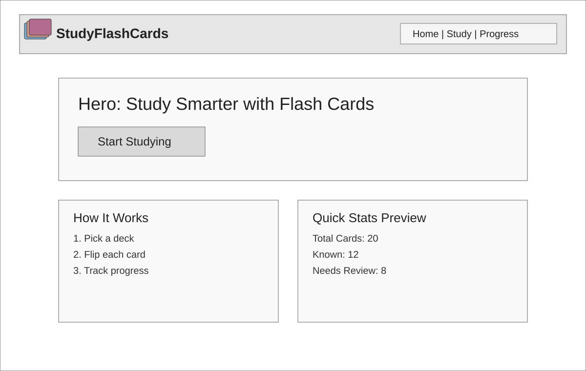
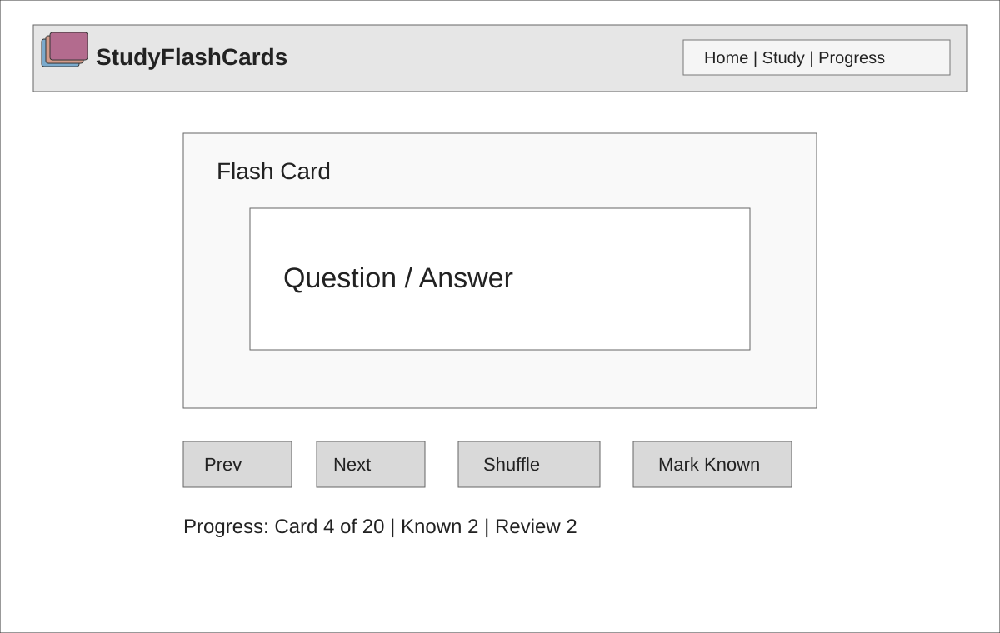

Overview
Purpose
StudyFlashCards is a simple app that helps students study by using digital flashcards.
Audience
High school and college students who need to study vocabulary, definitions, and concepts.
Dynamic elements
Users can click cards to flip them, navigate through the deck, shuffle, and mark cards as known or needing review.
Branding
Website Logo
Style Guide
Color Palette
Palette URL: https://coolors.co/7baacc-b36b8e-d39b8a-bbc5a9| Primary | Secondary | Accent 1 | Accent 2 |
|---|---|---|---|
| #7BAACC | #B36B8E | #D39B8A | #BBC5A9 |
Typography
Heading Font: Poppins
Paragraph Font: Nunito Sans
Normal paragraph example
StudyFlashCards is a simple way to study. You look at cards one at a time, flip them over to check the answer, and mark which ones you know. The app keeps track of what you've learned and what you still need to practice.
Colored paragraph example
Shuffle your cards to mix them up, check your progress, and study whenever you want. StudyFlashCards makes studying less stressful.
Navigation
Content
Home page
Welcome message, instructions, and a "Start Studying" button. Shows the app logo and explains what flashcards do.
Images: Logo and simple icons.
Data: Number of cards in the deck and progress from the last session.
Study Pile page
Shows one card at a time with a question on front and answer on back. Has buttons for Previous, Next, Shuffle, Known, and Needs Review. Shows progress at the bottom.
Sample data: { term: "HTML", definition: "Structure" }, { term: "CSS", definition: "Style" }, { term: "JavaScript", definition: "Behavior" }.
Wireframes
Two wireframes below show how each page will look.
Home
Top navigation, welcome section, and a big "Start" button.

Study Pile
One card in the middle with buttons below it. Progress bar at the bottom.
